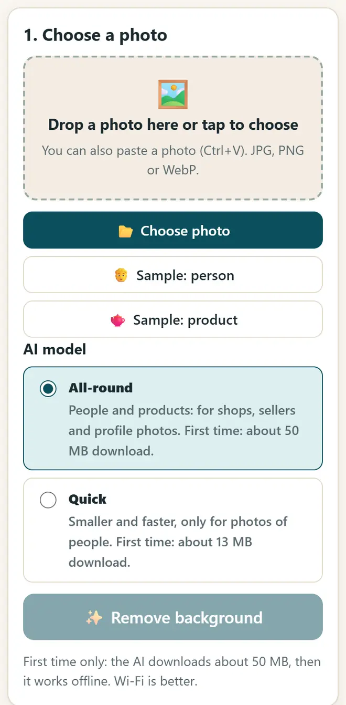
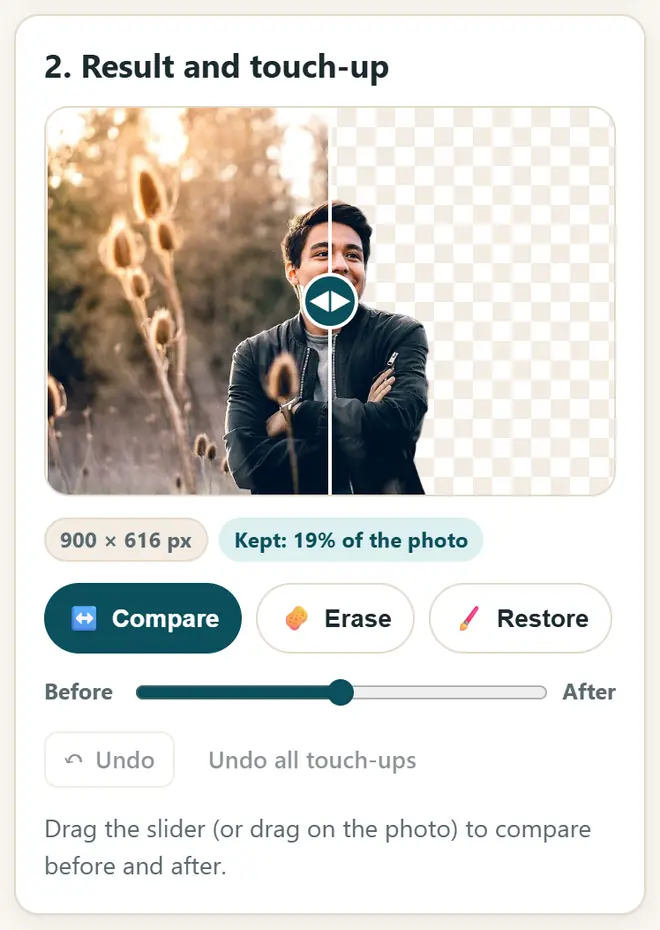

How to remove the background from a photo, free and without uploading it
Many background removers send your photo to their server, and ask you to sign up or pay for the full size. This one runs the AI on your own phone or computer, so the photo stays with you.
Short answer
Open AI Background Remover, press “Choose photo” and then “Remove background”. The first time, the AI model is downloaded once (Wi-Fi is better). Fix small mistakes with “Erase” and “Restore”, pick a background such as “Transparent” or “White”, and press “Download PNG” or “Download JPG”.
Remove a background in 5 steps
-
Choose a photo
Open AI Background Remover and press “Choose photo”. A clear photo in good light, where the person or item stands out from the background, works best.
-
Pick the AI model
“All-round” works for people, products and pets. “Quick” is smaller and faster, but only for photos of people. The model you choose is downloaded once and then works without internet.

Choose a photo and the AI model, then remove the background. -
Remove the background
Press “Remove background”. On a phone this can take up to a minute. Use “Compare” to see before and after.
-
Touch up the edges
If the AI left a bit behind, choose “Erase” and paint over it. If it cut something by mistake, choose “Restore” and paint it back. Undo takes back the last stroke.

The background is gone: compare, touch up and download. -
Choose the background and download
Pick “Transparent”, “White”, a colour, a blur or your own photo as the background. Choose the size: “Square DP” for profile photos or “Product 1000 × 1000” for online shop listings. Then press “Download PNG” (keeps the transparent background) or “Download JPG” (smaller file).
Good to know
- For a transparent background, always download the PNG. In a JPG the transparent parts become white.
- Selling online? Photograph the item on any table, then choose “Product 1000 × 1000” with a white background.
- Hair, glass and shiny or see-through things are the hardest for the AI. Check the edges and touch them up.
- Need the photo in exact pixels or KB for a form? Use Form Photo & Signature Resizer. To make many photos smaller, use Image Compressor & Resizer.
Get new free tools and Hindi AI lessons
Join our email list to hear about new free apps, new guides and Hindi video lessons on AI. No spam.
For adults (18+). You can unsubscribe at any time.
Why we recommend these tools
- Free for everyone: no ads, no sign-up and no paid plan.
- Private: your files and details stay on your own device.
- Works on a phone, laptop or smartboard, and offline once opened.
- Available in 12 languages, including Hindi.
Prefer video? Watch free Hindi lessons on AI and free tools on our YouTube channel.
Frequently asked questions
Is my photo uploaded to a server?
No. Only the AI model is downloaded to your device, once. The photo itself never leaves your phone or computer.
Is it really free? Is there a watermark?
Yes, it is free, with no sign-up and no watermark. The download keeps the size of your photo; only very big photos are made a little smaller so that the AI can run.
Why does it need internet the first time?
To download the AI model: about 50 MB for “All-round” or 13 MB for “Quick”. After that it is saved on your device and works offline.
The result is not clean. What can I do?
Try the other AI model, use a photo with better light and a plainer background, or fix the edges by hand with “Erase” and “Restore”.
Does it work on a mobile phone?
Yes, in a recent Chrome on Android or Safari on iPhone. It is slower than on a computer: one photo can take up to a minute.
Found this useful?
Send it to a friend, your colleagues or your school's WhatsApp group.